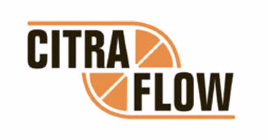
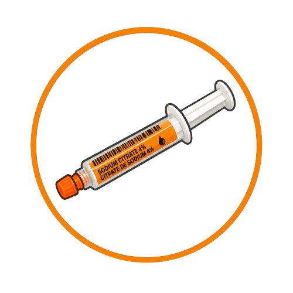
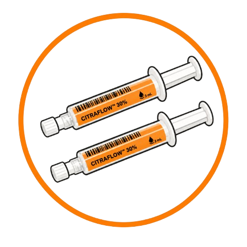

100% Heparin-Free
Eliminates exposure to HIT/HITTS risk and systemic anticoagulation concerns.
For Healthcare Professionals

Trusted heparin-free catheter locking for dialysis and intensive care, delivered in CitraFlow 4%, 30%, and 46.7% pre-filled syringes engineered for patency, infection control, and clinical confidence.
Eliminates exposure to HIT/HITTS risk and systemic anticoagulation concerns.
High-concentration citrate destabilizes bacterial matrices and helps inhibit coaggregation.
Precision syringes are designed to prevent reflux, clotting, and inconsistent locking volumes.
Terminally sterilized packaging supports immediate use in high-acuity clinical settings.
Product Portfolio

For vascular access device flushing and locking, with citrate-based anti-coagulant support for routine access maintenance.
For vascular access device locking where anti-coagulant, biofilm reduction, and antimicrobial properties are priorities.
For vascular access device locking with a higher sodium citrate concentration in the CitraFlow prefilled syringe family.
Clinical Evidence

Backed by multicenter trials including the referenced Weijmer study, CitraFlow positions citrate locking as a safety-forward alternative to conventional heparin protocols.
87%
Reduction in bacteremia compared with heparin in cited trial data.
Meta-analysis findings in the brief cite a 52% reduction in major bleeding events after switching to citrate locks.
Higher citrate concentrations are presented as more effective against sessile bacteria than lower-concentration heparin mixtures.
Manufactured by MedXL under ISO 13485-certified quality systems and positioned for Australian ARTG distribution disclosure.